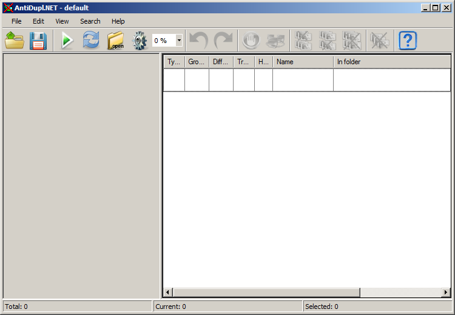
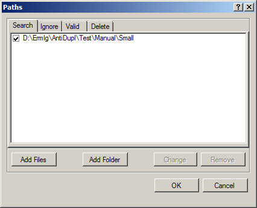
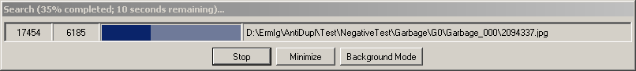
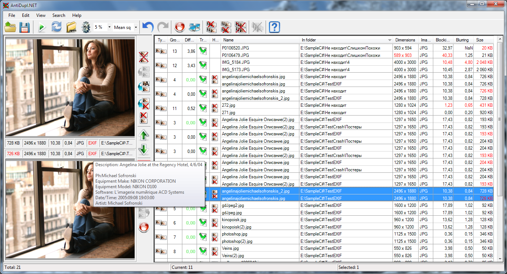
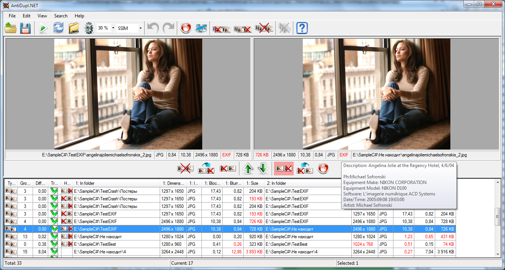

Work Beginning
This section focuses on those who are first time working with the program AntiDupl.NET. Here is a brief description of the basic steps that need to make the user to start the search. For detailed information you should refer to the links to the relevant sections. In addition, it is recommended to look into the FAQ section, where there are answers to frequently asked questions.
The main window looks like:
In order to begin your search you must select the directory where the search should be performed. What you must click on the button Paths

on the main toolbar, or a similar item Search - Paths of the Main Menu. This will open the Paths Window:
In this window on the Search tab you should select a directory with pictures, in which you want to search. Checked box mean search inside subdirectories this directories. After this, click OK, back to the main window and click the Start Search button

on the main toolbar, or click item Search - Start search of the main menu. Then start searching. His progress will be displayed at the search progress window:
Its duration and the final results depend strongly on the search settings. In most cases you can use the default settings. After searching his results are displayed in the main window.
The right side of the main window is Table of Results. On this table, you can move in an arbitrary manner, visually evaluate the image on the left Preview Panel and, if necessary, delete, rename or move. These operations can be performed on the individual pictures, as well as on several at once.
Note that the user in addition to the table of vertical pairs can also select a table of horizontal pairs by using the item View - View mode of results of the Main Menu .
